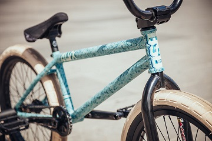

Alex Donnachie recently set up his new special edition digi camo wrapped
ALVX frame and it is looking amazing with black parts and the new sand
coloured Donnastreet tires. We shot this bike check with Alex while over in
France for the Monster Street series in Paris.
Alex Donnachie’s BSD ALVX frame setup:
– FRAME: Special edition Digi Camo BSD ALVX 20.6″ frame

– BARS: Black BSD OS 1″ Zingbars – GRIPS: Black BSD Paley Slims – STEM: Black BSD OS 1″ Levelled stem – HEADSET: BSD integrated headset
– FORKS: Black BSD Jonesin’ Fork
– SPROCKET: Black BSD Guard Sprocket 25t
– CRANKS: Black BSD Substance XL cranks 165mm
– PEDALS: Black BSD Safari pedals
– CHAIN: BSD 1991 halflink chain
– REAR HUB: Black BSD Westcoaster Hub with Jersey Barrier hub guards
– REAR TIRE: Sand BSD Donnastreet tire 2.4″
– REAR RIM: Black BSD NASA rim
– FRONT HUB: Black BSD Front Street PRO hub with Jersey Barrier hub guards
– FRONT TIRE: Sand BSD Donnastreet tire 2.4″
– FRONT RIM: Black BSD NASA rim
– PEGS: BSD Rude Tube LT XL
– SEAT: Prototype Black BSD Soulja mid seat
– SEAT POST: Black BSD Blitzed post
– More Photos
A FEW WORDS FROM ALEX ABOUT HIS SETUP:
“For this limited edition colour way I wanted to try a digital camo for
something a bit different. Setting the frame up I put on the new sand
Donnastreet tires and a prototype of Paley’s new camo Soulja seat to keep it
in the theme. Stoked on how it has came out…”.